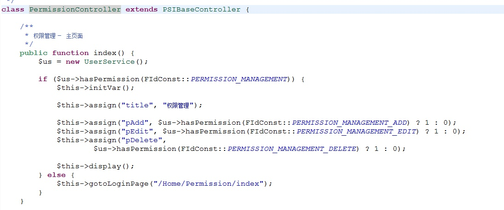

如何新增一个模块
1、fid
fid是功能id的缩写。一个fid只要做到全局唯一即可，但是最好参考PSI现在的默认命名惯例。
fid的定义在：/web/Application/Home/Common/FIdConst.class.php
2、主菜单
用户进入一个业务模块的操作入口是主菜单。
PSI的主菜单定义在数据库的表 t_menu_item 中，表结构的具体含义请参考 /doc/02 表结构/表结构说明.xlsx。
t_menu_item中的一条记录就对应一个菜单项，所以新加一个模块，就需要向t_menu_item中添加一条新记录。
3、权限
给表 t_permission 中新增一条记录，对应于通过菜单进入业务模块的权限。
如果页面里面的按钮也需要权限控制，有几个权限项就再定义几个fid，并向表 t_permission 里面新增对应的记录。
4、编写业务模块Controller
Controller需要从PSIBaseController继承。
业务模块的入口页面通常的action就用index()。
下图是PermissionController的index()的方法。

关键技术点：
用UserService的方法hasPermission来判断是否有权限
如果没有权限用$this->gotoLoginPage来跳转页面
用$this->initVar()初始化默认变量值
这是标准的ThinkPHP 3.2的Controller开发内容，请参考ThinkPHP 3.2开发文档。
5、编写业务模块View
业务模块的入口页面通常的action就用index()，对应的View就是index.html
这是标准的ThinkPHP 3.2的View开发内容，请参考ThinkPHP 3.2开发文档。
6、修改MainMenuController的代码
MainMenuController 位于 /web/Application/Home/Controller/MainMenuController.class.php
在MainMenuController的方法 navigateTo 中增加相应的跳转代码。